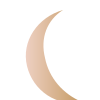

Філософія Luné
Ми створили салон, де мінімалізм поєднується з м’якою розкішшю: молочно-рожеві відтінки, золоті акценти, спокійна атмосфера та уважний сервіс.

BEAUTY STUDIO
Luné Beauty — салон краси у стилі ніжного мінімалізму з молочно-рожевою естетикою, золотими акцентами та персональним підходом до кожної клієнтки.
Ми створили салон, де мінімалізм поєднується з м’якою розкішшю: молочно-рожеві відтінки, золоті акценти, спокійна атмосфера та уважний сервіс.
Кожна процедура виконується з урахуванням індивідуальних особливостей клієнта, сучасних технік і якісних матеріалів.
Ми зібрали найпопулярніші процедури Luné Beauty, щоб ви швидко обрали догляд, який підходить саме вам.
Акуратна форма, догляд, гель-лак.
Форма, фарбування, довготривала укладка.
Образ для події, фотосесії або особливого вечора.
Зволоження, масаж, делікатні процедури.
“Дуже ніжна атмосфера, усе красиво й професійно. Манікюр виглядає ідеально.”
“Сайт і салон в одному стилі — дорого, чисто, зрозуміло. Записалась за хвилину.”
“Майстер підібрала догляд, пояснила все спокійно. Хочеться повертатися.”
“Дуже сподобалась атмосфера: тихо, світло, чисто й без зайвого шуму.”
“Брови зробили дуже природно. Майстриня уважна й приємна у спілкуванні.”
“Після догляду шкіра виглядає свіжою, а салон має неймовірно естетичний вигляд.”
“Усе дуже акуратно: від запису до самої процедури. Відчувається професійність.”
“Приємний сервіс, спокійна музика і красивий інтер’єр. Дуже комфортно.”
“Макіяж тримався весь вечір, виглядав ніжно і не перевантажував образ.”
“Люблю, коли все чисто, зрозуміло і красиво. Luné саме такий салон.”
Оберіть послугу, зручний час і дозвольте собі трохи ніжності.
Записатися онлайн